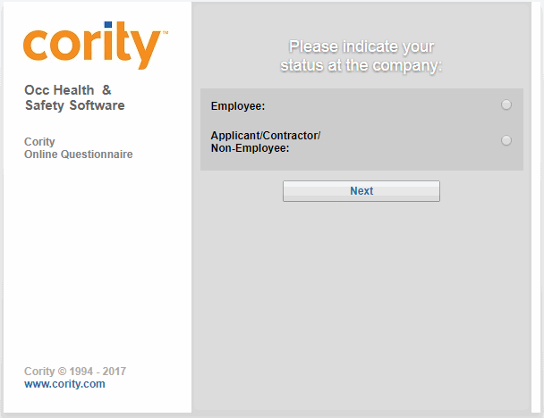
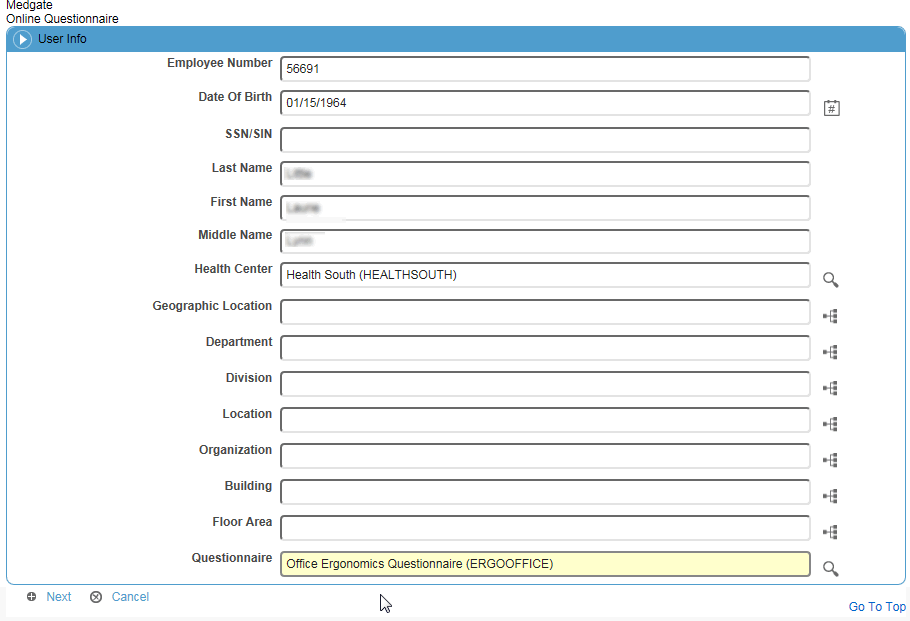
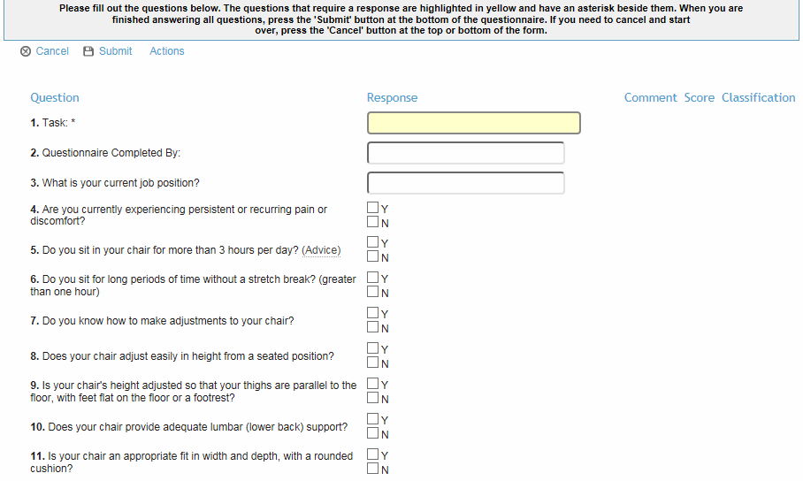

In order to complete a questionnaire, the employee will:
Access the URL provided to them.
The URL may provide direct access to the questionnaire without having to login and choose the questionnaire. You will still need to indicate your employment status and other identifying information.
Indicate employment status (Employee or Applicant/Contractor/Non-Employee).

Complete identifying information, and select the questionnaire to be filled out as directed by the Health Center Administrator.

Only questionnaires flagged as a “Public Questionnaire” in the Questionnaire look-up table will appear as choices. Also, if a questionnaire is linked to a particular health center, only users who have site security access to that health center will be able to see that questionnaire. There is a different URL for each Cloud; within each site you will only see questionnaires that have been associated with that Cloud.
Depending on the settings in the Questionnaire look-up table, you may be required to select a checkbox to indicate consent to use the information provided. Click Next.
Click Next.
Enter the responses to the questions as applicable, then click Submit.

The questionnaire is now ready to be posted to the main Questionnaire database in the Cority application, as described in Posting Online Questionnaires.